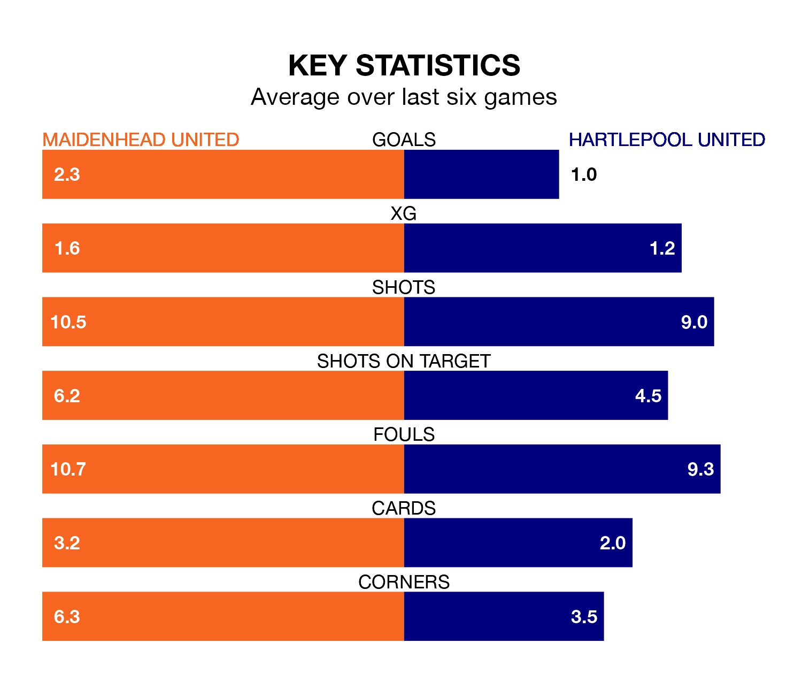

Hartlepool United travel to Maidenhead United on late Tuesday in the National League.
The visitors come into the game on the back of a win in their last match, having beaten Aldershot Town 2-0 at home, with goals from Emmanuel Dieseruvwe and Tom Parkes.
Maidenhead, meanwhile, drew their last match, 2-2 against Barnet, with their goals scored by Jayden Mitchell-Lawson and Reece Smith.
In the last 10 years, Maidenhead and Hartlepool have played each other on eight occasions. Maidenhead won three of them and Hartlepool five.
On average, Maidenhead scored 1.2 goals and Pools 1.9 in those matches.
Their last meeting was on August 15, when Hartlepool won 3-1 at home.
With 53 goals in 43 games so far this season, Maidenhead are scoring at below the league average rate with 1.2 goals per game. But they are conceding fewer than average too, letting in 62 goals at a rate of 1.4 per game.
Hartlepool, meanwhile, are average scorers, with 1.5 goals per game. They have conceded 1.7 goals per game.
Maidenhead United are 17th in the table after 43 games, of which they have won 13 and drawn 13, earning 52 points.
Hartlepool United are five places ahead of the home side in 12th, with 16 wins and eight draws putting them on 56 points.
Maidenhead are in mixed form in the National League, with three wins and a draw from their last six games.
With two wins and three draws over that period, Pools' form is slightly worse – they have taken nine points from 18, compared to Maidenhead's 10.
Updated: 11:20 (UTC), 09/04/24